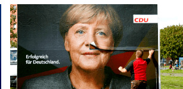
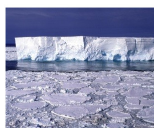

Preskoči na sadržaj
El Confidencial
El diario de los lectores influyentes
Home
Europa
Teknautas
Administracija
Europa
Los 'tories', en modo Monty Python: el ocaso de los conservadores británicos
14:35

Angela Merkel descarta categóricamente querer entrar en política europea
15:05
Los nuevos líderes de la UE no sufrieron la Europa de ayer
16:20
Teknautas

Científicos descubren un "dramático adelgazamiento" del hielo en la Antártida
14:08
Satélites revelan cambios inesperados en los glaciares
13:42
La tecnología que vigila el futuro del hielo polar
12:30